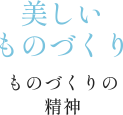
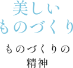

岡谷シルクについて

ブランドコンセプト
世界から“SILK OKAYA”と呼ばれた岡谷。そこには岡谷独自の「諏訪式繰糸機」を生んだ「ものづくりの精神」と製糸業を支える工女さんを育んだ「人づくりの精神」がありました。「岡谷シルク」は地域の誇りである「ものづくりの精神」と「人づくりの精神」を継承し、岡谷でしか体験・体感できない価値として提供していきます。
 

「岡谷シルク」
ブランド協議会
岡谷シルクブランド協議会は、シルクに関わる地元企業や団体、金融機関や行政・商工会議所等で構成された協議会です。令和３年７月に発足し、シルク岡谷・糸都岡谷と呼ばれてきた歴史・文化及び言葉を伝承するとともに、「新しいシルク文化が生まれるまち」を目指し、官民協働で、シルクの製品価値・機能価値の向上と、まち全体でシルクのイメージを築き上げる地域価値の向上に取り組んでいます。
令和３年度の主な取り組み
-
「岡谷シルク」の地域団体商標の取得を目指します。
地域名と商品名（サービス名）の組合せからなる文字商標「地域団体商標」の取得に向けた検討を行っています。地域団体商標を通じて、地域ブランドを適切に保護（地域ブランドの確立）するとともに、他商品・サービスとの差別化を図り、地域経済の活性化を目指します。 -
「オール岡谷産シルクの製品開発」を行います。
岡谷市は、養蚕・製糸・製品開発までを一貫して市内で完結することが出来る数少ないまちです。岡谷ならではのストーリー性を加えた他地域にない製品を開発し、多くの方に幸せを届けます。 -
「岡谷シルク認証制度」を創設します。
「岡谷シルク」の地域団体商標登録と併せて、シルクを活かし開発・創出された岡谷ならではの価値（商品・サービス）について認証する制度を創設し、岡谷＝シルクというイメージをまち全体で築き上げていきます。
協議会メンバー
株式会社宮坂製糸所
味澤製絲株式会社
三沢区民農園
きぬのふるさと岡谷絹工房
八十二銀行
諏訪信用金庫
（一財）長野県発明協会
岡谷商工会議所
岡谷市教育委員会
岡谷市